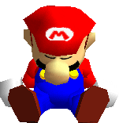
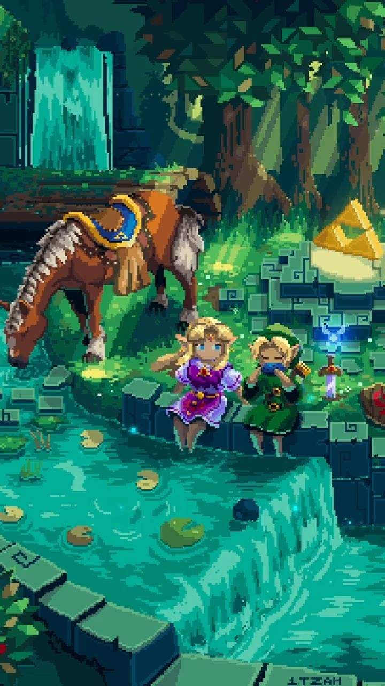

A História do Nintendo 64
O surgimento do Nintendo 64
O Nintendo 64 foi lançado no Japão em 1996 e chegou ao mercado
norte-americano no mesmo ano. Desenvolvido pela Nintendo, o
console marcou uma importante fase da história dos videogames,
sendo um dos principais responsáveis pela popularização dos
jogos em três dimensões.
Seu nome faz referência ao processador de 64 bits utilizado
pelo aparelho, que permitia experiências gráficas avançadas
para a época. O console também ficou conhecido pelo uso de
cartuchos, em vez dos CDs utilizados por alguns concorrentes.
Inovações e características
Uma das maiores inovações do Nintendo 64 foi seu controle,
que apresentava um formato diferente dos controles anteriores
e possuía uma alavanca analógica. Essa tecnologia permitiu
movimentos mais precisos nos jogos em três dimensões.
Outra novidade foi o Rumble Pak, acessório que adicionava
vibração ao controle, tornando a experiência dos jogadores
mais imersiva.
A importância dos jogos
O Nintendo 64 recebeu diversos jogos que marcaram gerações,
como Super Mario 64, The Legend of Zelda: Ocarina of Time,
Mario Kart 64, GoldenEye 007 e Super Smash Bros.
Esses títulos ajudaram a demonstrar o potencial dos jogos
em três dimensões e influenciaram o desenvolvimento de
muitos videogames que vieram depois.
O legado do Nintendo 64
Mesmo com o avanço da tecnologia e o lançamento de consoles
mais modernos, o Nintendo 64 continua sendo lembrado com
carinho pelos jogadores. Sua contribuição para a evolução
dos videogames foi muito importante, principalmente na
exploração de ambientes tridimensionais e na inovação dos
controles.
Até hoje, o console é considerado um dos aparelhos mais
marcantes da história da Nintendo e da indústria dos jogos
eletrônicos.
Top 3 Jogos do N64

Super Mario 64
Um dos jogos mais importantes da história do Nintendo 64, revolucionando os jogos de plataforma em 3D.

Ocarina of Time
The Legend of Zelda Ocarina of Time e Majoras Mask marcou gerações com sua aventura, exploração e inovação no mundo dos games.

Mario Kart 64
Um clássico das corridas multiplayer, conhecido por suas pistas e diversão entre amigos.